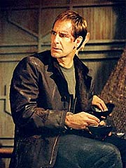
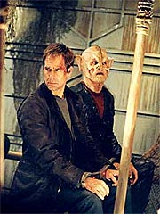

|
MANCHETE
DO EPISÓDIO
Episódio
de ação recria clima de
"Con Air" em Jornada nas Estrelas
Episódio
anterior | Próximo
episódio
Sinopse:
A Enterprise encontra o Shuttlepod Um à deriva no espaço, vitimado por um recente ataque. Ao recuperá-lo, eles descobrem que a missão de primeiro contato com os Enolianos, conduzida por Archer e Tucker, tinha sido bem-sucedida. O relato do diário do capitão não dava sinais claros, entretanto, de como a dupla teria sido capturada.
T'Pol contata o governo Enoliano, que informa sobre o procedimento de capturar traficantes e outros criminosos em órbita, quando eles tentam deixar o planeta. A primeiro-oficial pede que eles verifiquem se Archer e Trip foram capurados por engano, o que de fato aconteceu.
Segundo os Enolianos, eles haviam sido levados a uma nave de transporte de prisioneiros a caminho de Canamar, um presídio isolado em outra parte do espaço. Os alienígenas ordenam a libertação da dupla e informam à Enterprise as coordenadas da nave, para que eles possam buscar seus tripulantes.
 A bordo da nave de prisioneiros, quando Archer está para ser libertado, um dos presos escapa e toma o controle da nave. Com a ajuda de um segundo prisioneiro, um Nausicaano, os revoltosos imobilizam o piloto, mas precisam de ajuda para marcar um novo curso. Archer se oferece como piloto, e os dois criminosos aceitam a ajuda.
Na tentativa de conquistar a confiança do líder criminoso, Kuroda, Archer se faz passar por um traficante. Ele tenta discretamente enviar um sinal de socorro por um transmissor subespacial, mas falha quando Kuroda destrói o equipamento para evitar justamente isso.
Kuroda ordena que o capitão leve a nave até um sistema estelar binário, onde ele deve ser resgatado por seus comparsas. Cada vez mais entusiasmado com Archer, ele pede que o capitão se junte a ele. Enquanto isso, na seção de prisioneiros, Trip continua preso e precisa aguentar um alienígena tagarela que insiste em bater papo.
Os Enolianos descobrem que a nave saiu de sua rota e duas naves de combate seguem para interceptá-la. Kuroda quer que Archer dispare contra eles, mas o capitão diz que eles têm poder de fogo superior e seriam destruídos se atacassem. Em vez disso, sugere um plano alternativo, em que libera plasma sobre as duas naves, causando mal-funcionamento em seus motores. Kuroda quer então que ele destrua as patrulhas, mas Archer diz que é um traficante, não um assassino, e não quer aumentar sua lista de crimes.
Diante dos últimos eventos, a Enterprise volta a ser contatada pelos Enolianos, que comunicam que a nave em que estão Archer e Trip foi tomada por prisioneiros e que as tropas Enolianas têm ordem de destruí-la para impedir a fuga dos criminosos. T'Pol protesta, mas a única resposta do governo é sugerir que eles encontrem-na antes dos Enolianos.
Na nave de prisioneiros, Archer descobre que Kuroda pretende fugir com seu parceiro Nausicaano e deixar os outros presos a bordo, atirando a nave na atmosfera de um planeta próximo. Fracassando em dissuadi-lo do plano perverso, o capitão percebe que terá de tomar o controle da nave. Ele diz que precisará da ajuda de Trip para consertar a porta de atracação necessária para que os comparsas de Kuroda tirem-no de lá.
Aproximando-se do sistema, a Enterprise detecta a nave com os parceiros de Kuroda, assim como o veículo de prisioneiros. Incapazes de usar o teletransporte para tirar Archer e Trip de lá, eles decidem tomar a pequena nave e preparar uma abordagem-surpresa a fim de resgatar seus oficiais.
Trip consegue golpear o Nausicaano, mas acaba causando confusão a bordo, e ele e Archer acabam rendidos por Kuroda e seus comparsas, depois que o alienígena tagarela alerta os renegados das ações dos homens da Enterprise, na esperança de ser libertado posteriormente.
Felizmente, quando Kuroda pensa que irá escapar da nave, Malcolm Reed e um grupo de segurança chegam ao local e conseguem render os revoltosos. Os prisioneiros são salvos, mas Kuroda se recusa a fugir e voltar para Canamar e acaba morrendo com a nave flamejante na atmosfera do planeta.
De volta à Enterprise, um representante Enoliano pede a Archer um relatório. Irritado, o capitão só diz seca e agressivamente que os Enolianos estão prendendo gente sem provas das acusações, como fizeram com ele e com Trip, e que precisam rever seu sistema.
Comentários:
"Canamar" é uma aventura interessante, ainda que pouco revolucionária em termos criativos. Talvez seu aspecto mais inovador seja a total renúncia a uma mensagem mais clara acerca de seu conteúdo, o que acaba sendo um ponto positivo, por fugir do estereótipo trekker típico de "moral da história".
Essa atitude do episódio, de evitar a todo custo a transmissão de uma "lição de moral" aos telespectadores, é transmitida com todo o impacto e a eloquência devidos quando da volta de Archer à Enterprise, com seu "relatório" rápido, suscinto, curto e grosso aos Enolianos. Ali fica claro que realmente a idéia era conduzir uma aventura em torno duma civilização que age paranóica e preventivamente contra criminosos, sem esfregar na cara da audiência os porquês de esse comportamento ser inadequado.
Além de sumarizar esse espírito do segmento, Jonathan Archer dá passos importantes para se firmar como um "capitão vacinado contra malandragem alienígena", uma característica que ele não tinha até poucos episódios atrás. É bom ver o personagem crescendo e se desenvolvendo genuinamente, a partir de eventos que testemunhamos ao longo da série --soa verdadeiro e interessante, com o adicional de oferecer maior tridimensionalidade à personalidade do bom capitão.
 É especialmente agradável a forma como Archer convence Kuroda de que também é um criminoso --e dos bons--, que pode ser útil durante a rebelião a bordo do cargueiro. Igualmente valioso é o intercâmbio dramático entre Archer e Kuroda, que vai estabelecendo, ao longo do episódio, uma evolução de fases da suposta amizade dos dois, começando pela desconfiança, passando pela admiração e então vertendo para o antagonismo final, que culmina com a morte do criminoso.
Também foi boa a opção de matar Kuroda deixando-o cometer suicídio a bordo da nave para não retornar a Canamar -- embora o método tenha sido historicamente pouco feliz, tendo em vista a pouca distância entre o episódio e a destruição do ônibus espacial Columbia, da NASA, que perdeu os sete tripulantes em 1º de fevereiro de 2003, durante a reentrada na atmosfera da Terra. Houve até entre os fãs quem especulasse que as cenas que mostravam a desintegração da nave com Kuroda dentro foram editadas para não impactar ainda mais os telespectadores (pessoalmente, acho essa hipótese pouco provável).
Trip desta vez foi a vítima do episódio. Suas cenas serviram praticamente só como alívio cômico, e, nesse contexto, o sucesso é bastante questionável. As sequências do alienígena-tagarela-delator não servem a nenhum propósito, senão oferecer um mínimo "enredo B" para o episódio. E nem vale a pena mencionar que Archer e Trip estavam sem seus tradutores universais e dificilmente uma nave de transporte de prisioneiros oferecesse um, permitindo a comunicação (e a conspiração) entre os detidos.
A opção de usar a Enterprise como uma surpresa para a vitória numa batalha perdida funcionou e não soou muito artificial, apesar da impressionante coincidência temporal (que sorte a equipe de Malcolm Reed chegar a bordo justamente quando Archer e Trip estavam prestes a ir para o beleléu).
Os efeitos especiais e os valores de produção em geral são excelentes, como de costume, o que não define a qualidade de um episódio, mas sempre ajuda. Muito mais definidora foi a postura de nunca levar os prisioneiros até Canamar. Caso isso acontecesse, teríamos outra história dos tripulantes prisioneiros, como já vimos oitocentas vezes em
Jornada nas Estrelas. Em vez disso, o episódio centrou toda a ação dentro da nave, criando um clima no estilo "Con Air" nas Estrelas, uma novidade em se tratando da franquia.
No frigir dos ovos, "Canamar" é mais um episódio-padrão de
Enterprise, ligeiramente acima da média, mas nada espetacular. Um bom modo de se gastar uma hora à frente da TV, sem ter de se preocupar depois em lembrar e comentar com os amigos.
Citações:
Tucker - "I'm sorry I snapped at ya, but this isn't the best place ta socialize."
("Desculpe cortar seu barato, mas esse não é o melhor lugar para socialização.")
Kuroda - "I may not know how to fly this ship, but I sure know how to crash it!"
("Posso não saber como pilotar essa nave, mas certamente sei como derrubá-la!")
Oficial Enoliano - "Captain, my superiors will want a report on what happened..."
("Capitão, meus superiores vão querer um relatório sobre o que aconteceu...")
Archer - "I'll give you one right now. Kuroda is dead. The other eleven are under guard and, as you are aware, my engineer and I were falsely arrested! We almost wound up in Canamar... Makes me wonder how many others don't belong there! You wanted a report!?! You've got one!"
("Vou dar um agora mesmo. Kuroda está morto. Os outros onze estão sob guarda e, como você sabe, meu engenheiro e eu fomos presos sob falsas acusações! Quase fomos parar em Canamar... Me faz pensar em quantos outros não pertencem a aquele lugar! Queria um relatório!?! Aí está ele!")
Trivia:
 As filmagens principais do episódio foram divididas em dois blocos -- uma sequência de seis dias entre os dias 13 e 20 de dezembro de 2002, antes do feriado, seguidas por dois dias a mais nos dias 6 e 7 de janeiro de 2003.
As filmagens principais do episódio foram divididas em dois blocos -- uma sequência de seis dias entre os dias 13 e 20 de dezembro de 2002, antes do feriado, seguidas por dois dias a mais nos dias 6 e 7 de janeiro de 2003.
Embora a maioria do elenco regular tenha encerrado suas participações após dois dias de filmagem, Scott Bakula e Connor Trinneer foram exigidos todos os dias, em cenas que foram filmadas majoritariamente na nave de presos Enoliana.
O ator Mark Rolston disse que as filmagens foram exaustivas. "Scott [Bakula] e eu devemos ter passado dez horas filmando as lutas. E, deixe me dizer, ambos estamos na faixa dos 40 agora e não é tão fácil quanto costumava ser."
Mark Rolston já apareceu antes em Jornada como o tenente Walter Pierce, em
"Eye of the Beholder", de A Nova Geração.
Brannon Braga lamentou as dificuldades de produzir essa versão
Jornada de "Con Air". "Foi um roteiro que tivemos de escrever muito rapidamente e acabou sendo um episódio bem melhor do que merecia ser."
Ficha
técnica:
Escrito por John Shiban
Direção de Allan Kroeker
Exibido em 26/02/2003
Produção:
043
Elenco:
Scott
Bakula como Jonathan Archer
Jolene Blalock como
T'Pol
John Billingsley
como Phlox
Anthony Montgomery
como Travis Mayweather
Connor Trinneer como
Charlie 'Trip' Tucker III
Dominic Keating como
Malcolm Reed
Linda Park como Hoshi Sato
Elenco convidado:
Mark Rolston como Kuroda
Holmes R. Osborne como oficial Enoliano
Michael McGrady como Nausicaano
Sean Whalen como Zoumas
Brian Morri como guarda Enoliano
John Hansen como prisioneiro
Episódio
anterior | Próximo
episódio
|